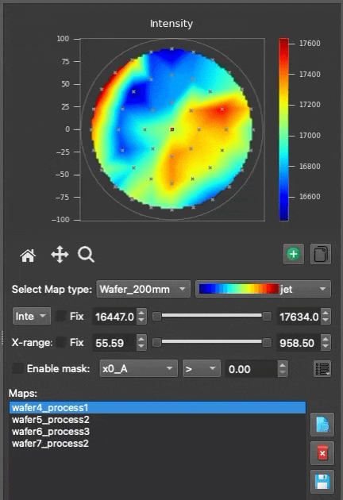
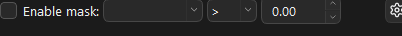
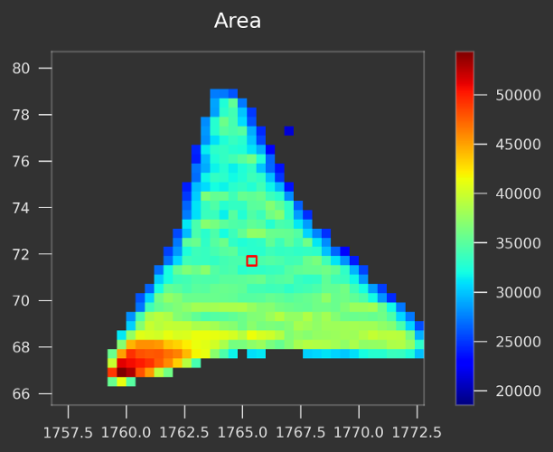
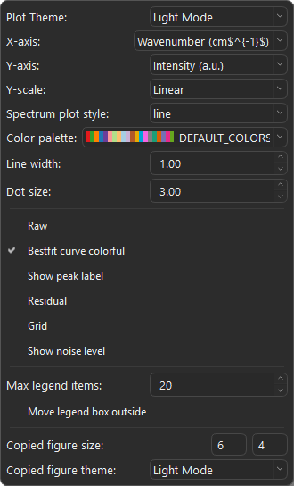
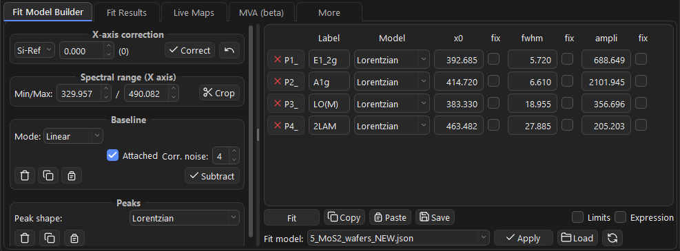
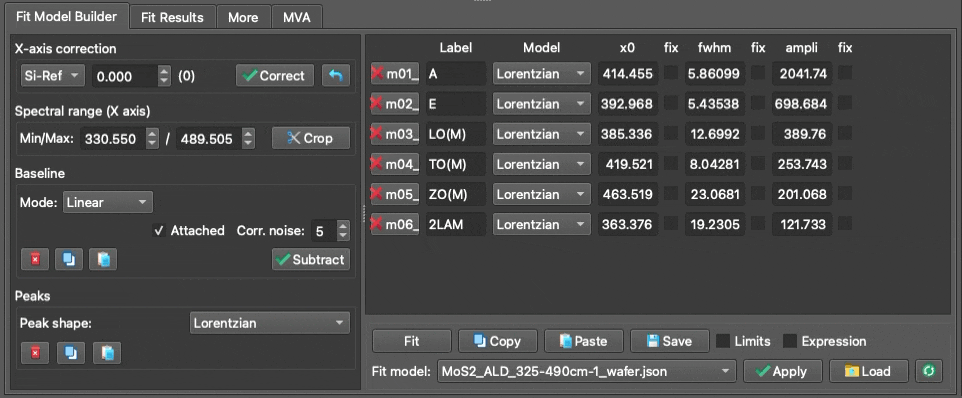
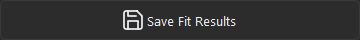

Рабочие области «Спектры» и «Карты»
Рабочие области: Спектры и Карты¶
Рабочие области Maps и Spectra имеют единую архитектуру и множество общих базовых функций. Однако рабочая область Maps дополнительно оснащена специализированными инструментами для обработки больших гиперспектральных наборов данных.

Обзор интерфейса рабочих областей
Spectra и Maps. Обе области разделены на три основные секции: верхняя левая (SpectraViewer), нижняя левая (FitModelBuilder) и правая (SpectraList / MapList).
1. MapList и MapViewer¶
MapList и MapViewer — это виджеты, предназначенные для удобной навигации и управления гиперспектральными наборами данных. В MapList отображаются все загруженные файлы карт, включая карты пластин (wafer maps) и стандартные 2D-карты.
Кнопки действий, расположенные рядом с MapList, позволяют: (1) просмотреть данные выбранной карты, (2) удалить выбранную карту из рабочей области или (3) экспортировать выбранную карту напрямую в файл Excel.
Вы можете легко переключаться между загруженными 2D-картами с помощью MapList, выбирать несколько карт с помощью Ctrl+Click или Shift+Click, а также перетаскивать одну или несколько выбранных карт внутри списка для изменения их порядка (это обновляет порядок сравнения во вкладке Live-карты (Live Maps), оставляя вашу активную основную карту неизменной). Основная выбранная карта (Primary) отображается в MapViewer. При открытии или выборе карты автоматически выбирается первый спектр карты и подсвечивается на тепловой карте: его кривая сразу же отображается в SpectraViewer, а базовая линия, таблица пиков и метаданные синхронизируются. По умолчанию MapViewer отображает тепловую карту сигнала «Интенсивность» (Intensity) или «Площадь» (Area). Если для карты уже выполнена аппроксимация, вы можете выбрать и визуализировать тепловую карту любого подогнанного параметра.

- Двойные ползунки позволяют быстро настроить спектральный диапазон и диапазон значений данных тепловой карты.
- Элементы управления панели навигации (Home / Rescale, Pan / Drag и Масштаб (Zoom)) позволяют интерактивно перемещаться по карте, панорамировать и приближать отдельные области с помощью единых векторных кнопок SPECTROview.
- Вы можете одновременно открыть несколько экземпляров
MapViewerдля сравнения различных подогнанных параметров. - Меню параметров (
…) включает переключатель Цветовая шкала (Color scale) для переключения нормализации тепловой карты между режимами Линейный (Linear) и Log. Логарифмическая шкала полезна, когда значения охватывают несколько порядков; если диапазон данных не является строго положительным, происходит автоматический возврат к линейной шкале.

Функция маскирования (Mask): позволяет выделить отдельные области тепловой карты с помощью пользовательских числовых фильтров на основе параметров.


Пример функции маскирования для 2D-карт: чешуйка MoS2 выделяется с помощью маски (интенсивность пика A1g > 40 a.u.) для отсечения окружающей подложки.
2. SpectraList¶
SpectraList отображает все загруженные дискретные спектры (в рабочей области Spectra) или все спектры текущей выбранной карты (в рабочей области Maps) (см. рисунок ниже).
Вы можете выбрать один или несколько спектров одновременно; выбранные спектры сразу же визуализируются в SpectraViewer. Специальные кнопки позволяют выделить все спектры, повторно инициализировать (сбросить) спектры, сохранить выбранные данные в формат TXT или отправить выбранные спектры в рабочую область Spectra для отдельного анализа.

Виджет
SpectraList вместе со строкой прогресса в рабочей области Maps.
Индикаторы состояния обработки: аккуратная круглая цветовая точка справа от каждого элемента наглядно показывает его текущее состояние обработки (зелёная — аппроксимация сошлась, красная — аппроксимация не сошлась, синяя — вычтена базовая линия, серая — спектр обрезан, прозрачная / без точки — необработанные спектры).
Индикатор выполнения (Progress Bar) под SpectraList в реальном времени отображает прогресс аппроксимации (%), количество сошедшихся спектров и затраченное время (s). Кнопка Стоп (Stop) позволяет безопасно прервать выполняемый процесс аппроксимации.
2.1. Перенос между рабочими областями¶
При отправке выбранных спектров из рабочей области Maps в рабочую область Spectra система использует словари с глубоким копированием (deep copy). Это гарантирует, что:
- Исходные массивы интенсивности и координат полностью сохраняются.
- Конфигурация
baseline_config(включая опорные точки и режимы вычисления) переносится именно так, как вы её настроили. - Вся ваша модель
fit_model(включая все пределы пиков, выражения и начальные приближения) полностью сохраняется. - Активные границы спектральной обрезки и состояния вычитания базовой линии остаются неизменными.
Благодаря этому перенесённые спектры сохраняют своё полное интерактивное и аналитическое состояние на новой вкладке рабочей области, не затрагивая исходную карту.
3. SpectraViewer¶
SpectraViewer — это центральный виджет построения графиков, в котором отображаются все спектры, выбранные в SpectraList (вместе с их аппроксимирующими кривыми).
3.1. Интерактивное управление мышью в SpectraViewer¶

- Показать параметры пиков: наведите курсор на любой подогнанный пик, чтобы отобразить всплывающую подсказку с его точными параметрами.
- Добавить / удалить пики: когда на панели инструментов включена кнопка Пик (Peak), щёлкните левой кнопкой мыши, чтобы задать новое начальное приближение пика, или щёлкните правой кнопкой мыши рядом с существующим пиком, чтобы удалить его.
- Настройка начальных приближений пиков: нажмите и перетащите центр или ширину начального пика для ручной корректировки перед запуском аппроксимации.
- Быстрое масштабирование оси Y: используйте колесо прокрутки мыши для быстрого увеличения или уменьшения масштаба по оси Y.
3.2. Кнопки панели инструментов и параметры отображения¶
| Кнопка | Функция |
|---|---|
 |
Rescale: автоматически масштабирует оси графика под текущие данные. Горячая клавиша: Ctrl + R. |
 |
Масштаб: при включении активирует выделение прямоугольной области для приближения перетаскиванием левой кнопки мыши. |
 |
Базовая линия (Baseline): при включении позволяет вручную задавать опорные точки baseline (базовой линии), щёлкая непосредственно по спектрам. |
 |
Пики (Peaks): при включении позволяет вручную добавлять начальные приближения пиков, щёлкая непосредственно по спектрам. |
 |
Normalization: отображает выбранные спектры, нормированные на интенсивность их максимального пика. Введите значения в поля «min» и «max», чтобы выполнить нормировку по конкретному спектральному диапазону. Исходные спектры (слева) и нормированные спектры (справа) — крайне полезно для выявления тонких сдвигов пиков. |
 |
Show Bestfit: включает или отключает отображение аппроксимирующей кривой (кривых). |
 |
Legend: включает или отключает отображение блока легенды (или цветовой шкалы, если включён параметр Цветовая шкала вместо легенды (Show colorbar instead of legend)). При отображении внутри холста блок легенды закрепляется в правом верхнем углу (upper right), чтобы не перекрывать спектры с меньшей интенсивностью (либо может быть вынесен за пределы холста рядом с ним через параметр Вынести легенду наружу (Move legend box outside) в меню Доп. настройки (More Options)). Дважды щёлкните в любом месте внутри легенды, чтобы в одном диалоговом окне изменить палитру, максимальное число отображаемых записей, а также цвета и подписи спектров. Изменения применяются кнопкой OK или отменяются кнопкой Отмена (Cancel). Для сохранения отзывчивости интерфейса выборки в рабочих областях Спектры (Spectra) и Карты (Maps) редактируются пакетами до 100 спектров; сузьте выборку, чтобы отредактировать спектры вне текущего пакета. |
 |
Plot Heatmap: расположена в правой части панели инструментов непосредственно слева от кнопок Доп. настройки и Копировать (Copy); переключает режим визуализации в виде 2D-тепловой карты интенсивности для нескольких выбранных спектров. Отображает непрерывную эволюцию спектральной интенсивности с отдельным выбором оси Y, пользовательской подписью и настройкой разрешения прямо на панели инструментов. |
 |
3D View: расположена между кнопками Plot Heatmap и Доп. настройки в правой части панели инструментов; включает интерактивный режим 3D-визуализации для выбранных спектров. Зажмите левую кнопку мыши и перетаскивайте курсор для вращения углов обзора, среднюю кнопку — для панорамирования, правую кнопку или колесо прокрутки — для масштабирования, а нажатие Rescale (Ctrl + R) сбрасывает угол камеры и пределы осей. |
 |
Доп. настройки: расположена в правой части панели инструментов (перед кнопкой Копировать); открывает компактную двухколоночную панель конфигурации, позволяющую настраивать единицы X/Y, переключать логарифмические шкалы, менять стили построения, выбирать дискретные или градиентные цветовые палитры спектров по наглядным цветовым полосам-превью, задавать максимальное число элементов легенды (15 по умолчанию), включать Вынести легенду наружу для размещения легенды рядом с холстом без перекрытия спектров, включать Цветовая шкала вместо легенды (при установке флажка динамически появляются поля Параметр шкалы (Colorbar parameter) для выбора Index или числового токена из имени файла и Подпись шкалы (Colorbar label)), чтобы отобразить справа цветовую шкалу для упорядоченной серии спектров, переключать видимость кривых Исходные (Raw) / Невязка (Residual), включать сетку, регулировать толщину линий и задавать точные размеры рисунка. |
 |
Копировать: расположена на правом краю панели инструментов; копирует график в буфер обмена в виде высококачественного изображения. Используйте Ctrl + Click (или Cmd + Click в macOS), чтобы вместо изображения скопировать в буфер обмена исходные числовые данные графика. |
3.3. Пакетный редактор легенды¶
Отобразите легенду кнопкой Legend на панели инструментов, затем дважды щёлкните в любом месте внутри блока легенды, чтобы открыть пакетный редактор. Это заменяет прежний процесс работы, в котором приходилось открывать отдельное окно для каждой подписи или цвета.
В верхней части диалогового окна расположены два элемента управления для всего графика:
- Цветовая палитра (Color palette): выберите палитру по её визуальному превью в виде цветовой полосы. Среди дискретных вариантов доступны 20-цветная
DEFAULT_COLORS,tab20,tab20b,tab20c,Dark2,PairedиAccent. Среди градиентных вариантов доступныviridis,plasma,jet,cividisиmagma. - Макс. элементов легенды (Max legend items): задаёт число записей, отображаемых в легенде графика. Значение по умолчанию — 15. Этот параметр не удаляет спектры с графика.
Таблица спектров содержит по одной строке для каждого редактируемого спектра:
- Спектр (Spectrum) указывает исходный спектр или имя файла.
- Цвет (Color) выбирает образец цвета из активной палитры. Автоматически (Automatic) сохраняет привязку спектра к цвету, назначенному палитрой; выбор конкретного оттенка создаёт индивидуальное переопределение для этого спектра. Используйте Больше цветов… (More colors…), чтобы выбрать цвет вне палитры.
- Подпись (Label) изменяет текст, отображаемый в легенде. Очистка пользовательской подписи восстанавливает имя файла спектра.
Смена палитры обновляет все превью цвета со значением Автоматически, сохраняя цвета, выбранные вручную. Нажмите OK, чтобы применить все изменения сразу, или Отмена, чтобы отменить все правки, внесённые в диалоге. Принятые подписи и цвета записываются обратно в базовые объекты спектров, благодаря чему список спектров, рабочая область Спектры, рабочая область Карты и сохранённые данные рабочей области остаются синхронизированными.
Пакеты редактирования по 100 спектров
Для сохранения отзывчивости интерфейса при больших выборках диалоговое окно создаёт редакторы максимум для первых 100 отображаемых спектров как в рабочей области Спектры, так и в рабочей области Карты. Если выборка больше, диалог сообщает «показано 100 из N» («showing 100 of N»). Спектры за пределами отображаемого пакета не изменяются. Сузьте текущую выборку, чтобы отредактировать другую группу.
3.4. Режим визуализации тепловой карты¶
Инструмент Heatmap Plot преобразует несколько построенных на графике спектров в непрерывную 2D-карту интенсивности. Этот режим особенно эффективен при анализе серий данных, таких как температурные профили in situ, временна́я кинетика, пространственные линейные сканы или градиенты состава.


SpectraViewer в режиме визуализации тепловой карты, отображающий непрерывную 2D-карту интенсивности по температурной серии in situ.
Основные элементы управления и параметры¶
Когда режим тепловой карты активирован, специализированные элементы управления появляются непосредственно на главной панели инструментов, а несовместимые 1D-инструменты (такие как маркеры пиков, опорные точки базовой линии, инструмент удаления космических выбросов и поля нормировки) автоматически скрываются:
- Переключатель тепловой карты (): включает или отключает построение 2D-тепловой карты. Отключение этой кнопки мгновенно восстанавливает стандартные 1D-кривые спектров и возвращает все стандартные инструменты панели.
- Выпадающий список параметра оси Y:
Index: равномерно укладывает спектры вдоль вертикальной оси в соответствии с порядком выбора (0, 1, 2, ...).- Токены имён файлов: автоматически извлекает числовые параметры, встроенные в имена файлов и разделённые подчёркиваниями (
_) (например, файлыsample_25°C.txt,sample_100°C.txt,sample_200°C.txtавтоматически формируют токены вроде25°C, извлекая соответствующие числовые значения25, 100, 200в качестве физических координат Y). - Пользовательская подпись оси Y: текстовое поле для переопределения автоматического заголовка вертикальной оси (например,
Temperature (°C),Time (min)илиPosition (µm)). - Число точек интерполяции по оси Y (
Pts:): задаёт количество интерполированных вертикальных срезов (по умолчанию300точек) с использованием гладкой интерполяции. Установка значения0отключает интерполяцию и отображает исходные дискретные строки. - Цветовая палитра интенсивности: использует активную цветовую палитру, выбранную в разделе Доп. настройки (например,
jet,viridis,plasma).
3.5. Интерактивный режим 3D-визуализации¶
Кнопка 3D View (), расположенная в правой части панели инструментов между Plot Heatmap и Доп. настройки, отображает выбранные спектры в интерактивном 3D-пространстве (спектральная ось по X, индекс серии или параметр из имени файла по Y и интенсивность по Z):
- Интерактивное управление камерой:
- Вращение: зажмите левую кнопку мыши и перетаскивайте в любом месте 3D-графика для свободного изменения углов возвышения и азимута.
- Панорамирование / Масштабирование: зажмите среднюю кнопку мыши и перетащите для сдвига; зажмите правую кнопку мыши и перетащите (или используйте колесо прокрутки мыши) для масштабирования вдоль оси интенсивности.
- Сбросить вид: нажмите Rescale (
Ctrl + R), чтобы восстановить угол камеры по умолчанию и подогнать пределы по всем данным. - Общие элементы управления осью серий: выберите
Indexили любой числовой параметр, извлечённый из имён файлов (например,25°C,100°C), в выпадающем списке на панели инструментов и при необходимости задайте пользовательскую подпись оси Y. - Совместимые параметры: без проблем работает с Normalization, Show Bestfit, режимами Legend / Colorbar, стилями Линия (Line) / Точка (Dot), наложением Исходные, Сетка (Grid), шкалой Z Линейный / Log, темами графика Светлая (Light) / Тёмная (Dark) и Копировать в буфер обмена. Переключение между обычным режимом, Plot Heatmap и 3D View автоматически восстанавливает соответствующие инструменты панели.
3.6. Интерактивные селекторы спектральных диапазонов и Live-карты (рабочие области Spectra и Maps)¶
В обеих рабочих областях — Спектры и Карты — можно интерактивно выделить рамками до трёх спектральных областей в SpectraViewer и наблюдать за их изменением в реальном времени на специализированной вкладке Live-карты:

- Рабочая область
Spectra: отображает до трёх 1D-графиков изменения параметров с цветовым кодированием (Красный, Синий, Зелёный) по текущим выбранным спектрам вSpectraList, позволяя быстро оценить, как интенсивность, положение, высота или площадь пика меняются по серии выбранных спектров.

- Рабочая область
Maps: автоматически адаптируется к пространственной размерности выбранной карты: - 2D-карты: отображает до трёх пространственных 2D-тепловых карт в реальном времени по активной гиперспектральной сетке.
- 1D-карты (профили / линейные сканы): автоматически распознаёт коллинеарные координаты измерений и отображает Красный, Синий и Зелёный каналы в виде 1D-линейных графиков вдоль пространственной оси (
X (mm),Y (mm)илиDistance (mm)), плавно переключаясь между тепловыми картами и графиками профилей при выборе разных карт.

Управление селекторами диапазонов (SpectraViewer)¶
Вертикальная панель инструментов на правом краю SpectraViewer предоставляет три независимые цветные кнопки-переключателя:
- Красный (Red) (
R) - Синий (Blue) (
B) - Зелёный (Green) (
G)
Каждая кнопка активирует соответствующую пару перетаскиваемых вертикальных маркеров (границы и затенённый интервал) непосредственно на графике спектра и автоматически переключает нижнюю панель вкладок на вкладку Live-карты:
- Интерактивное перетаскивание: нажмите и перетащите любую из двух вертикальных ограничительных линий, чтобы изменить минимальное или максимальное волновое число. Нажмите и перетащите затенённую центральную область, чтобы сдвинуть весь интервал целиком без изменения его ширины.
- Несколько диапазонов одновременно: можно одновременно активировать любую комбинацию из трёх селекторов. Каждый из них независимо сохраняет свой цвет, интервал и видимость.
- Корректность автомасштабирования: маркеры селекторов диапазона не расширяют и не засоряют границы автоматического масштабирования спектра, поэтому кнопка Rescale (
Ctrl+R) всегда масштабирует график точно по загруженным спектральным данным. - Автоматическое ограничение диапазона: при обрезке спектра или загрузке новых спектральных данных селекторы диапазонов автоматически ограничиваются и перемещаются в пределы видимой области спектра.
- Обновление в реальном времени: перемещение любого селектора или изменение выбранных спектров/карт мгновенно пересчитывает и обновляет соответствующий 1D-график изменения параметра (в рабочей области «Спектры») либо 2D-тепловую карту / 1D-график профиля (в рабочей области «Карты») всякий раз, когда открыта вкладка Live-карты (с адаптивной задержкой 60–250 ms для плавного перетаскивания на больших наборах данных). Снятые с отметки спектры в текущей карте или списке спектров автоматически маскируются, чтобы исключённые выбросы не искажали цветовые шкалы или профили.
- Множественный выбор и сравнение карт (рабочая область
Maps): используйтеCtrl+ClickилиShift+Clickв списке Карты, чтобы выбрать несколько карт одновременно, сохраняя вашу Основную карту (Primary Map) активной для предобработки, аппроксимации и просмотра вMapViewer: - Сравнение нескольких 1D-профилей: когда основная карта представляет собой 1D-линейный скан, все выбранные 1D-профили накладываются друг на друга в каждой подпанели канала с одинаковой толщиной линий (переключите кнопку Legend, чтобы различать отдельные кривые на холсте).
- Переключение между выбранными 2D-картами: когда основная карта является 2D-картой, в заголовке Live-карт появляется компактный переключатель
◀ [2D Map Selector] ▶, позволяющий пролистывать выбранные 2D-тепловые карты без потери выделения. - Пакетное удаление: нажатие клавиши Delete (или кнопки Удалить (Delete)) при выборе нескольких карт запрашивает подтверждение перед совместным удалением всех выбранных карт.
Визуализация и подпанели вкладки Live-карты¶
Вкладка Live-карты расположена на нижней панели вкладок между Результаты аппроксимации (Fit Results) и MVA (а вкладка Ещё (More) размещена в конце списка вкладок).
- Отображение подпанелей: когда активен один или несколько селекторов диапазона, соответствующие им панели (Красный, Синий, Зелёный) отображаются рядом друг с другом. Если ни один селектор не включён, информационное сообщение подсказывает активировать кнопку селектора на правом краю
SpectraViewer. - Поддерживаемые спектральные параметры: для каждой подпанели в выпадающем списке можно выбрать, какой параметр извлекается и строится на графике:
| Параметр | Тип | Описание |
|---|---|---|
| Интегральная интенсивность (Integrated intensity) | Прямой | Интеграл (\(\sum Y \cdot \Delta x\)) интенсивности по выбранному спектральному интервалу. |
| Средняя интенсивность (Mean intensity) | Прямой | Средняя интенсивность в пределах выбранного интервала. |
| Максимальная интенсивность (Maximum intensity) | Прямой | Наибольшее измеренное значение интенсивности в интервале. |
| Положение пика (Peak position) | Прямой | Волновое число, соответствующее максимальной интенсивности в интервале. |
| Высота пика (Peak height) | Прямой | Максимальная интенсивность за вычетом локальной базовой линии на границах интервала. |
| Положение пика (аппрокс.) (Peak position (fit)) | По аппроксимации | Центральное волновое число (\(x_0\)) подогнанного пика в интервале (требуется предварительная аппроксимация). |
| Высота пика (аппрокс.) (Peak height (fit)) | По аппроксимации | Подогнанная амплитуда (\(A\)) пика в интервале (требуется предварительная аппроксимация). |
| Площадь пика (аппрокс.) (Peak area (fit)) | По аппроксимации | Аналитически проинтегрированная площадь подогнанного пика (требуется предварительная аппроксимация). |
| Отношение R/B (R/B ratio) (только Зелёный канал) | Производный | Попиксельное (2D-карта) или поточечное (1D-профиль / серия спектров) отношение интегральных интенсивностей \(I_{\mathrm{Red}} / I_{\mathrm{Blue}}\). Обновляется автоматически при перемещении или изменении размера красных или синих границ; нулевые или околонулевые значения синей интенсивности безопасно маскируются как NaN. Пока выбрано Отношение R/B, зелёная рамка автоматически скрывается на графике спектра, чтобы отображались только красная и синяя рамки, определяющие отношение (переключение обратно на любой другой параметр сразу восстанавливает зелёную рамку). |
Примечание: если выбран параметр по аппроксимации, но результаты аппроксимации ещё недоступны, панель аккуратно отображает информационный баннер вместо вводящих в заблуждение или некорректных значений.
Интерактивный выбор спектров с RGB Live-карт (рабочая область Maps)¶
При работе с 2D-картами или картами 1D-профилей в рабочей области Карты (когда инструменты Pan и Масштаб выключены) вы можете выбирать спектры прямо с любой подпанели (Красный, Синий или Зелёный), не покидая вкладку Live-карты:
- Одиночный клик: выбирает спектр, ближайший к точке щелчка, и сразу отображает его в
SpectraViewer. Ctrl+ клик: добавляет ещё один спектр к текущей выборке (или снимает выделение с уже выбранной точки).- Нажатие и перетаскивание: рисует пунктирную рамку выделения, выбирая все спектры внутри области (
Ctrl+ перетаскивание добавляет спектры из рамки к существующей выборке). - Синхронизированная подсветка и переключение карт: выбранные точки обводятся красным контуром на всех активных подпанелях RGB и синхронизируются с основным
MapViewerи плавающими окнамиVMapViewerDialog. Если вы переключились на другую 2D-карту с помощью элемента управления◀ [2D Map] ▶в заголовке, щелчок по точке на ней автоматически делает эту карту вашей основной картой и загружает её спектры. Щелчки внутри открытого блока легенды по-прежнему предназначены для перетаскивания легенды или редактирования подписей двойным щелчком.
Элементы управления отдельных подпанелей¶
Каждая подпанель оснащена собственными элементами управления:
- Rescale / Pan / Масштаб: независимые кнопки навигации в заголовке каждой подпанели позволяют приближать области интереса, панорамировать по кривой или тепловой карте и возвращаться к полному диапазону графика, не затрагивая соседние каналы. Двойной щелчок по легенде по-прежнему открывает редактор легенды вместо сброса масштаба.
- Нормировка 1D-кривых (1D-карты и 1D-линейные графики): включите кнопку нормировки рядом с выпадающим списком параметров (с необязательными границами
XminиXmax) в каждой RGB-подпанели, чтобы визуально нормировать каждую отображаемую 1D-кривую независимо к1.0по её глобальному максимуму или на интервале[Xmin, Xmax]без изменения исходных данных — идеальное решение для сравнения формы профилей на картах с разной амплитудой сигнала. - Palette (2D-тепловые карты в рабочей области «Карты»): выберите любую стандартную цветовую палитру (например,
viridis,plasma,inferno,jet,turbo,coolwarm,cividis,magma,Reds,Blues,Greens). В рабочей области «Спектры» каждая 1D-кривая изменения параметра автоматически оформляется в цвете соответствующего селектора (Красный, Синий или Зелёный). - Копировать: копирует рисунок подпанели в буфер обмена с настроенными параметрами Размер копируемого рисунка (Copied figure size) и Тема копируемого рисунка (Copied figure theme) (независимо от текущего размера окна SPECTROview). Удерживайте
Ctrl+ клик (илиCmd+ клик в macOS), чтобы вместо изображения скопировать в буфер обмена исходный числовой набор данных этого графика в виде столбцов с разделителем-табуляцией (1D-серия изменений, таблицы одиночных/нескольких 1D-профилей или точки 2D-карты(X, Y, Value)). - Значок диапазона / состояния: отображает текущий интервал \([x_{min}, x_{max}]\) или статус аппроксимации.
Параметры отображения Live-карт и настройка легенды¶
Когда активен один или несколько селекторов, в правом верхнем углу вкладки Live-карты появляются два быстрых элемента управления:
- Show / Hide Legend (
btn_legend): включает или скрывает интерактивные легенды холста на 1D-подпанелях. Легенды можно перетаскивать мышью прямо на графике, а двойной щелчок по блоку легенды позволяет настроить её подписи и цвета. - Дополнительные настройки вида (
⋯, More View Options): открывает компактное двухколоночное меню с интервалами, аналогичнымиSpectraViewer(все настройки синхронизируются между рабочими областями Спектры и Карты и автоматически сохраняются для последующих запусков): - Тема графика (Plot Theme): переключает рисунки Live-карт между режимами Светлый режим (Light Mode) (белый холст, по умолчанию) и Тёмный режим (Dark Mode) независимо от глобальной темы оформления приложения.
- Шкалы осей и цвета: переключает Масштаб X (X-scale), Масштаб Y (Y-scale) и Цветовая шкала (Z) (Color (Z) scale) между Линейный и Log (для неположительных областей выполняется безопасный автоматический возврат к линейной шкале).
- Стиль построения и размеры: переключает 1D-кривые между стилями Линия, Линия + точки (Line + Dots) и Точка, а также настраивает Толщина (Line width) (по умолчанию
1.5), Размер точки (Dot size) (по умолчанию1.5) и Размер текста (Text size) графика (6–24 pt, масштабирующий заголовки осей, подписи, деления и подписи цветовой шкалы). - Размер и тема копируемого рисунка: задаёт фиксированные размеры рисунка для буфера обмена в дюймах (Размер копируемого рисунка, по умолчанию
5.5×4.0) и выбирает Тема копируемого рисунка (Светлый режим по умолчанию или Тёмный режим), чтобы скопированные рисунки сохраняли постоянные пропорции и читаемый размер текста независимо от изменения размера окна. - Параметры блока легенды: включает/отключает видимость легенды, изменяет Положение легенды (Legend location) (
best, углы,outside right,outside top), Столбцов легенды (Legend columns), Шрифт легенды (Legend font size) или открывает Изменить подписи легенды... (Edit legend labels...) для переименования серий и выбора пользовательских цветов прямо на легенде холста. - Средства отображения и сравнения: показывает или скрывает заголовок Показывать заголовок рисунка (Show figure label) над каждым RGB-холстом (по умолчанию выкл.), переключает Сетка (Show grid) (по умолчанию выкл.), синхронизирует пределы по оси Y между панелями через Общая ось Y (1D) (Share Y-axis (1D)), включает билинейное Сглаживание карты (Heatmap smoothing), показывает/скрывает Показывать цветовые шкалы (Colorbars) или сбрасывает настройки с помощью Сбросить параметры вида (Reset view options).
4. FitModelBuilder¶
На вкладке FitModelBuilder выполняется настройка моделей спектральной аппроксимации. Она разделена на три основные панели: Fitting, PeakTable и FitModelControl, каждая из которых подробно описана в следующих разделах.
Вы можете использовать глобальные параметры аппроксимации или настроить параметры аппроксимации в панели Settings Panel (подробнее см. в разделе «Настройки»).

Вкладка
FitModelBuilder: (1) панель Fitting (слева), (2) панель PeakTable (справа вверху) и (3) панель FitModelControl (справа внизу).
4.1. Панель Fitting¶
Панель Fitting последовательно проводит вас через процесс построения надёжной модели в четыре логических шага:
Шаг 1: Коррекция оси X (необязательно): выполните эмпирическую коррекцию оси X на основе измерений известного эталонного образца (например, пика кремния ровно на 520.7 cm⁻¹). Просто аппроксимируйте эталонный спектр, введите теоретически точное положение и примените сдвиг для глобальной коррекции калибровочного смещения.
Шаг 2: Определение диапазона аппроксимации: ограничьте математический процесс аппроксимации конкретной областью интереса по оси X.
Шаг 3: Задание базовой линии: SPECTROview предлагает два различных режима задания спектральной базовой линии (Manual или Auto):

Выбор режима базовой линии: режим Manual (слева) и режим Auto (справа).
- Режим Manual (
LinearилиPolynomial): задавайте опорные точки базовой линии, щёлкая непосредственно вSpectraViewer. Установите флажок Привязка (Attached), чтобы автоматически привязывать поставленные точки к ближайшей кривой данных. Установите флажок Correct noise, чтобы вычислять интенсивность точки как локальное среднее соседних точек данных — это делает расстановку опорных точек устойчивой к высокому уровню шума. - Режим Auto: автоматическое построение кривой базовой линии с помощью передовых алгоритмов. Используйте ползунок для тонкой настройки агрессивности алгоритма:
arPLS: Asymmetrically Reweighted PLS. Эталонный алгоритм для типичных рамановских и ИК-базовых линий.airPLS: высокоагрессивный алгоритм, отлично подходящий для удаления сильного и сложного фона флуоресценции. Настоятельно рекомендуется и проверен для данных рамановской спектроскопии.AsLS: очень стабильный алгоритм, хотя иногда он может затрудняться в различении шума и широких пиков. Лучше всего подходит для относительно чистых спектров.ModPoly: модифицированный полином (Modified Polynomial). Чрезвычайно популярен и эффективен для простого полиномиального фона флуоресценции.
Шаг 4: Задание пиков:
- Добавляйте пики непосредственно в
SpectraViewerщелчком левой кнопки мыши (убедитесь, что кнопка-переключатель Пик активна). Вы можете интерактивно корректировать их начальные приближения, перетаскивая их мышью. - Каждый добавленный на график пик сразу же заносится в таблицу
PeakTable. - Поддерживаются следующие профили пиков:
Lorentzian,Gaussian,PseudoVoigt,LorentzianAsym,GaussianAsym,Fano,DecaySingleExpиDecayBiExp.
4.2. Поддерживаемые профили пиков¶
Движок VBF Engine в SPECTROview предоставляет высокооптимизированные реализации следующих математических профилей пиков:
| Модель | Параметры | Формула |
|---|---|---|
Gaussian |
ampli, fwhm, x0 |
a · exp(-4 ln(2) · (x-x0)2 / w2) |
Lorentzian |
ampli, fwhm, x0 |
a / [1 + 4(x-x0)2 / w2] |
PseudoVoigt |
ampli, fwhm, x0, alpha |
α · G + (1-α) · L |
GaussianAsym |
ampli, fwhm_l, fwhm_r, x0 |
Кусочно-заданная функция Гаусса с левой/правой FWHM |
LorentzianAsym |
ampli, fwhm_l, fwhm_r, x0 |
Кусочно-заданная функция Лоренца с левой/правой FWHM |
Fano |
ampli, fwhm, x0, q |
a · (q + ε)2 / (1 + ε2), ε = 2(x-x0)/w |
DecaySingleExp |
A, tau, B |
A · e-t/τ + B |
DecayBiExp |
A1, tau1, A2, tau2, B |
A1 · e-t/τ1 + A2 · e-t/τ2 + B |
4.3. Панель PeakTable¶
PeakTable отображает все математические параметры заданных вами пиков. Когда вы перетаскиваете пик в области просмотра, эти свойства обновляются динамически.
Динамическая индексация пиков: каждый пик автоматически получает индексный суффикс (например, _1, _2), указывающий на порядок его создания. Когда вы добавляете, удаляете или переупорядочиваете пики, SPECTROview автоматически переиндексирует их для сохранения последовательной нумерации (например, при удалении пика 2 пик 3 становится новым пиком 2). Это гарантирует упорядоченность ваших выражений и результатов аппроксимации.

Панель
PeakTable, отображающая параметры пиков и ограничения.
Добавление ограничений для модели аппроксимации:
Фиксировать (Fix): установите флажок «фикс.» (fix), чтобы заморозить значение параметра и запретить оптимизатору изменять его в процессе аппроксимации.
Пределы (Limits): введите минимальное и максимальное граничные значения, чтобы ограничить диапазон изменения параметра оптимизатором.

Пример 1: Включите опцию «Пределы» (Limits) под таблицей пиков и задайте значения «min» и «max» для каждого параметра аппроксимации.
Выражение (Expression): задайте сложные математические зависимости между параметрами. Движок VBF Engine в SPECTROview надёжно вычисляет эти выражения математически перед их передачей оптимизатору. Если пики переиндексируются вследствие удаления, ссылки на них в ваших математических выражениях обновляются автоматически, чтобы предотвратить поломку моделей.

Пример 2: Использование выражения для задания ограничения, при котором (1) положение пика E (P2) на 17 меньше положения пика A (P1), либо (2) амплитуда пика E (P2) составляет ровно половину амплитуды A (P1).
4.4. Панель FitModelControl¶
Когда модель полностью настроена, нажмите кнопку Подгонка (Fit), чтобы запустить оптимизацию.

Панель
FitModelControl.
Копирование / вставка моделей аппроксимации: Полностью настроенную модель аппроксимации можно скопировать с одного спектра и вставить в другой, что упрощает перенос сложных конфигураций между отдельными файлами.
- При выполнении действия Вставить (Paste) для модели движок всегда считывает текущее значение порога шума (Noise Threshold) из активной панели настроек. Это означает, что вы можете скопировать модель, скорректировать порог шума, а затем вставить её, применив модель с обновлёнными параметрами шума.
Сохранение / загрузка моделей аппроксимации: Если вы планируете часто использовать модель, её можно сохранить как шаблон. Сохранённые модели легко выбирать и применять к новым наборам данных из выпадающего меню.
- Выбор из выпадающего списка: выберите любую существующую модель в выпадающем списке Модель: (
Fit model:). - Загрузка с помощью кнопки: нажмите кнопку Загрузить (Load), чтобы выбрать и загрузить любой файл шаблона модели аппроксимации
.jsonиз вашей файловой системы. - Перетаскивание (Drag & Drop): вы можете перетащить файл модели аппроксимации
.jsonпрямо на панель Модель аппроксимации (Fit Model Builder) или в любое место рабочей области Спектры или Карты. Файл мгновенно добавится в список моделей, будет выбран в выпадающем списке и готов к применению. - Применение модели: нажмите Применить (Apply), чтобы назначить загруженную модель текущему выбранному спектру (или удерживайте Ctrl при нажатии Применить, чтобы назначить её всем спектрам).
- Когда вы нажимаете Сохранить (Save), чтобы записать модель в файл
.json, текущий порог шума (Noise Threshold) жёстко фиксируется в этом файле. Позже, когда вы используете Применить (Загрузить) для этой модели, движок аппроксимации строго использует именно тот порог шума, который сохранён в файле, игнорируя текущее значение в панели настроек.
5. Сбор и сохранение результатов аппроксимации¶
После завершения аппроксимации по всем спектрам или картам необходимо собрать наилучшие результаты:
- Перейдите на вкладку Результаты аппроксимации.
- Нажмите кнопку Собрать результаты (Collect). SPECTROview мгновенно объединит все оптимальные параметры аппроксимации в единую таблицу данных. Качество аппроксимации каждого спектра (R2, коэффициент детерминации) включается в виде столбца, поэтому его можно фильтровать или строить на графике (например, в виде тепловой карты R² в рабочей области
Maps) так же, как любой подогнанный параметр. Вы можете щёлкнуть по заголовку любого столбца, чтобы выделить весь столбец, или протянуть курсор по нескольким заголовкам, чтобы выделить несколько столбцов для быстрого копирования в буфер обмена.
Настройка числа десятичных знаков: количество знаков после запятой, отображаемых для числовых результатов (
x0,ampli,fwhm,area,R2, …), задаётся счётчиком Знаков после запятой (Fit results decimals) в верхней части вкладки Результаты аппроксимации, непосредственно над кнопкой Собрать результаты (по умолчанию 3). Измените значение, а затем снова нажмите Собрать результаты, чтобы пересобрать таблицу с новой точностью. Эта настройка также применяется к вычисляемым столбцам (см. ниже). Столбцы координат X/Y всегда сохраняют полную точность.

Интерфейс сбора результатов аппроксимации и сводная таблица данных.
5.1. Извлечение полей из имён файлов¶
Этот инструмент позволяет автоматически извлекать метаданные, встроенные в имена файлов. Например, если ваши файлы названы Sample1_ProcessA_Temp25, инструмент может разбить имя файла по символам подчёркивания (_) и поместить извлечённые значения в отдельные новые столбцы вашего набора данных (см. видео выше).
5.2. Вычисление и добавление новых столбцов¶
Вы можете легко создавать новые столбцы на основе математических комбинаций существующих параметров аппроксимации (например, рассчитать сдвиг пика с помощью выражения x0_p1 - x0_p2).
Поддерживаемые математические операции: +, -, *, /, **, % и (). Вычисляемый столбец округляется до того же числа знаков Знаков после запятой, которое задано в верхней части вкладки.
Важное примечание: если имена столбцов содержат пробелы или специальные символы, их необходимо заключить в обратные кавычки. Пример:
`x0_LO(M)`
5.3. Сохранение и визуализация¶
После формирования итоговой таблицы данных вы можете:
- Сохранить её под понятным именем, а затем отправить напрямую в рабочую область Графики (Graphs) для немедленного построения графиков.

- Экспортировать её в таблицу Excel/CSV для внешнего использования.

6. Вкладка More¶
Вкладка More (Ещё) предоставляет доступ к вспомогательным инструментам и метаданным и разделена на три секции:

- Слева: отображает подробные метаданные, извлечённые напрямую из загруженных файлов
.wdf,.spc,.l6s,.l6m,.ngsили.ngc, показывая точные настройки прибора, использованные при регистрации спектра. - По центру: отображает подробные свойства и статистическую информацию о текущем выбранном спектре.
- Справа: предоставляет доступ к дополнительным инструментам предобработки, таким как алгоритмы глобальной нормировки интенсивности и обнаружение артефактов космических лучей.